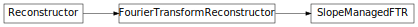

Slope Periodicity Management¶
The Fourier transform reconstruct assumes a periodic square grid when reconstructing phase. Most telescopes have a non-periodic circular grid, so we must adjust the slopes so that they account for the periodicity assumption.
Reference / API¶
FTR.slopemanage Module¶
Functions¶
slope_management(ap, xs, ys) |
Slope management for the fast fourier transform. |
edge_extend(ap, xs, ys) |
Edge Extension for the fast fourier transform. |
Classes¶
SlopeManagedFTR(ap[, filter, manage_tt, ...]) |
An FTR Reconstructor with slope management to remove the effects of finite apertures. |
Class Inheritance Diagram¶
